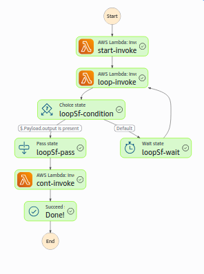
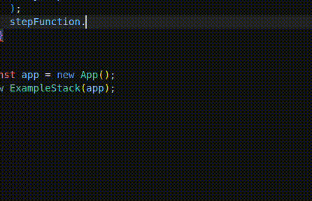

A typed, highly opinionated wrapper about the CDK AwS Step Functions that wants to make writing step functions as easy as Typescript functions.
At a high level this library tries to bridge the gap between AWS Lambda (run time max. 15 minutes) and AWS Batch (heavy weight service). If you ever have tried to just quickly deploy a longer running Typescript function as a Step Functors you might have encountered the following issues
This library attempts to provide you with a specialized strongly typed embedded domain specific languages that is executed in three different ways:
stepfunctor-infra executes the language to create AWS infrastructurestepfunctor-exec creates commonjs bundles so your code is executed as an AWS lamdbastepfunctor-exec lets you just execute your step function locally for testingApart from recursion it lets you define all sensible programs as step functions. Ideally, instead of developing in the cloud reduces development of step functions to
A full example is implemented in the example- packages. We present the essentials here:
First define your step function:
import { final, loopWhile, prepend } from 'stepfunctor-lang';
async function start() {
return { s: 'Hello, world!' };
}
async function loop(input: {
s: string;
}): Promise<{ s: string; output?: { s: string } }> {
return {
s: input.s.substring(0, input.s.length - 1),
output: input.s.length > 1 ? undefined : { s: input.s },
};
}
async function cont(_: { s: string }): Promise<void> {
console.log('done');
}
const loopSf = loopWhile(
loop,
'loop',
prepend('cont', cont, final('Done!')),
5,
);
export const sf = prepend('start', start, loopSf);
THen export the handler functions in your npm package for the lambda code
import { sf } from 'example-shared';
import { exportStepFunction } from 'stepfunctor-lang';
exportStepFunction(sf, module);
Finally, build your cdk app to deploy the infrastructure:
import { App, Stack } from 'aws-cdk-lib';
import { Construct } from 'constructs';
import { sf } from 'example-shared';
import path from 'path';
import { buildStepFunctionConstruct } from 'stepfunctor-infra';
class ExampleStack extends Stack {
constructor(scope: Construct) {
super(scope, 'myStack');
buildStepFunctionConstruct(
sf,
{
moduleName: 'index',
artifactPath: path.join(
__dirname,
'../../../packages/example-lambda/dist/',
),
scope: this,
},
'MyStepFunction',
);
}
}
const app = new App();
new ExampleStack(app);
The result will look like this:

Do your lambdas need more permissions? Nothing is easier than that:

The stepfunctor package consists of three components.
The language: The (domain specific) language of step functions is defined by the stepfunctor-lang package: It
defines the primitives of step functions
The lambda artifacts: This is defined by the stepfunctor-exec package. It creates the right javascript artifacts
that can later be referred to by cdk.
The infrastructure: This is defined by the stepfunctor-infra package. It defines the cdk constructs that
actually deploy the step function to AWS.
Meta observation: We recommend using a monorepo structure like this repository using a monorepo wrapper like nx. This
gives you fine grained controlled over all your artifacts without relying on implicit behavior of cdk
(like bundling, executing using ts-node).
Define your step function: We recommend to define and export your step function in a package example-shared.
The most basic step function looks as follows:
import { final, prepend } from 'stepfunctor-lang';
export const stepFunction = prepend(
'name',
async () => {
console.log('Hello, world!');
},
final('Done!'),
);
It just logs "Hello, world!" and then succeeds.
Test the step function locally
You can test the execution of your step function locally:
import { sf } from 'example-shared';
import { runStepFunction } from 'stepfunctor-exec';
describe('test execution of step function', () => {
it('works', async () => {
await runStepFunction(sf, {});
});
});
Create the javascript artifacts:
Create a commonjs package example-lambda and in your entry point do the following:
import { sf } from 'example-shared';
import { exportStepFunction } from 'stepfunctor-exec';
exportStepFunction(sf, module);
Deploy the step function in your cdk app:
We recommend (in general but in special in this case) the setup from apps/example-app:
webpack or another bundlercdk.json{
"app": "node dist/main.js"
}
You can now easily deploy your code
import { App, Stack } from 'aws-cdk-lib';
import { Construct } from 'constructs';
import { sf } from 'example-shared';
import path from 'path';
import { buildStepFunctionConstruct } from 'stepfunctor-infra';
class ExampleStack extends Stack {
constructor(scope: Construct) {
super(scope, 'myStack');
buildStepFunctionConstruct(
sf,
{
moduleName: 'index',
artifactPath: path.join(
__dirname,
'../../../packages/example-lambda/dist/',
),
scope: this,
},
'MyStepFunction',
);
}
}
const app = new App();
new ExampleStack(app);
Note that the artifactPath depends on the relative location of your artifacts. Also note
that you now have an implicit dependency between the packages example-app and
example-lambda.
You now can run
pnpx nx run-many -t build
cd apps/example-app
cdk deploy
This project is licensed under Apache 2.0 or MIT license.